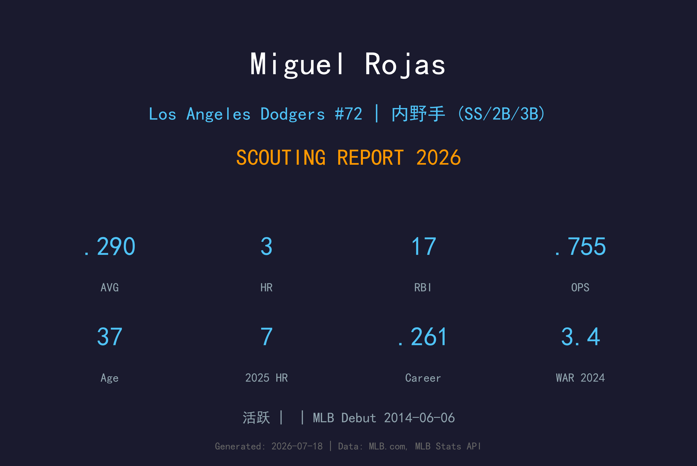
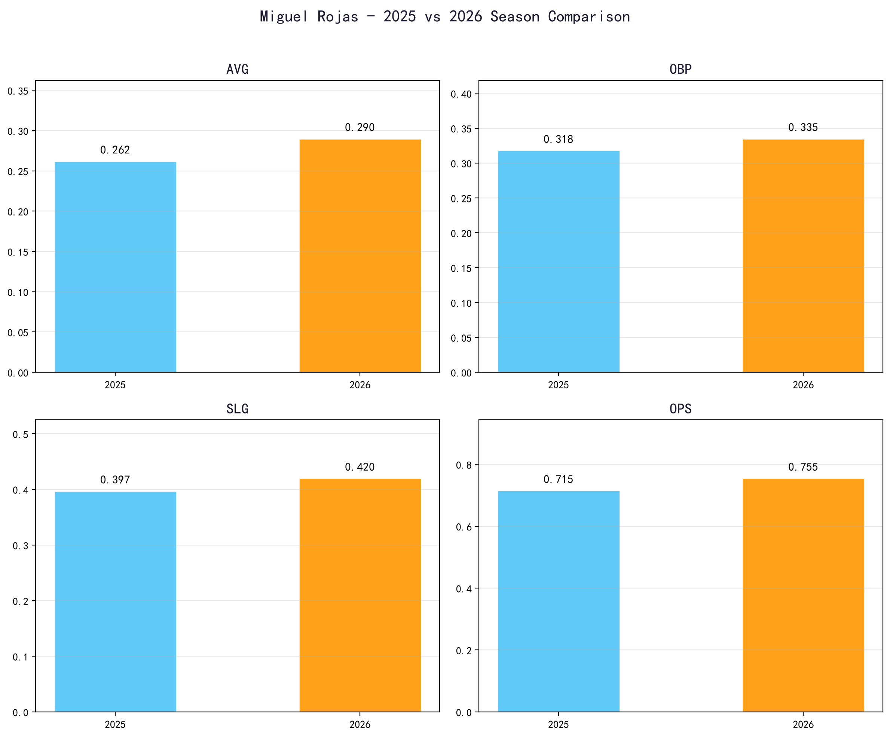
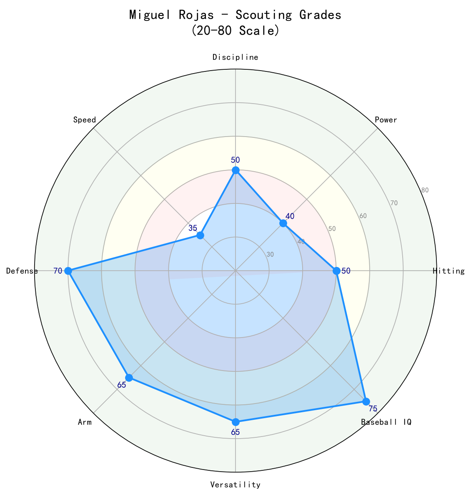

Los Angeles Dodgers #72 | 内野手 (SS/2B/3B) | 活跃

Miguel Rojas 是道奇阵容中经验最丰富的老将之一，也是球队的精神领袖。他以 elite 防守、稳定控场和关键时刻的大心脏著称，能在游击、二垒、三垒之间无缝切换。
2026年他已经37岁，但打击表现反而有所提升：65场比赛 .290/.335/.420，OPS .755，超过2025年的 .715。同时他仍然是道奇内野防守的定海神针，在 Mookie Betts 缺阵或轮休时经常担任关键位置。
Rojas 的价值远超出数据。他是2024年 Roy Campanella Award 得主，象征着道奇最珍视的领导力和团队精神。2025年世界大赛第7战的致胜全垒打，更是他传奇生涯中的巅峰时刻。
2014年6月6日代表迈阿密马林鱼登上大联盟。早期以防守型内野手定位，逐步在辛辛那提和迈阿密体系成长。
成为马林鱼首发游击手，以 .986 守备率和稳定守备著称。2021年击出生涯新高的 37 支二垒安打。
被交易至洛杉矶道奇，成为内野防守和 clubhouse 领袖。他的经验和防守弹性迅速赢得教练团信任。
被队友和教练票选为 Roy Campanella Award 得主，表彰最能体现道奇精神和领导力的球员。单季 WAR 3.4 创生涯新高。
在11月1日世界大赛第7战对多伦多蓝鸟的 387 英尺致胜全垒打，是他当年度第二轰对同侧投手，也是道奇夺冠的关键一击。

📈 上图为近三年核心数据趋势。柱状图高度代表该年度表现，便于快速比较球员状态的上升或下滑。
| 赛季 | G | AVG | OBP | SLG | OPS | HR | RBI | BB | SO |
|---|---|---|---|---|---|---|---|---|---|
| 2025 | 114 | .262 | .318 | .397 | .715 | 7 | 27 | 24 | 46 |
| 2026 | 65 | .290 | .335 | .420 | .755 | 3 | 17 | 10 | 16 |
Rojas 的防守是他继续在大联盟立足的核心。他在游击位置的 range、 glove work 和传球稳定性都达到优秀水准，也能胜任二垒和三垒。他的防守 IQ 和站位选择是年轻内野手的学习对象。
37岁老将的打击率从 .262 提升至 .290，OPS 从 .715 提升至 .755。这显示他依然能保持良好的接触能力和选球。虽然长打有限，但他的打击足以让他在阵容中占据位置。
Rojas 是道奇更衣室的 leader。他能在逆境中稳定军心，并在大场面下打出关键一击。2025年世界大赛第7战的全垒打是最佳例证。

防守和领导力的价值远超传统数据。他是道奇夺冠文化的传承者，关键时刻从不手软。
B 级 / 冠军老将内野
Rojas 已进入生涯末期，但他仍有望在未来1-2年继续作为道奇内野替补和 clubhouse 领袖。他的防守和大赛经验使他非常适合季后赛阵容。
2026-2027：继续担任内野替补和防守救火员，年出赛80-100场。
2028+：可能退役或转型教练/管理岗位。
Miguel Elias Rojas Naidenoff 出生于委内瑞拉洛斯特克斯（Los Teques）。他是道奇阵中的委内瑞拉老将代表之一，与 Brusdar Graterol 等同乡球员共同组成了拉丁裔核心。
Rojas 与妻子 Mariana 育有一子一女。他非常重视家庭，并以其幽默和 locker room 存在感深受队友喜爱。2017年他曾与 Martín Prado 等人一起赢得马林鱼更衣室 fantasy football 联盟冠军。
2022年他将背号从19改为11，以纪念去世的祖父——正是祖父在委内瑞拉点燃了他对棒球的热爱。2025年他又将11号让给 Roki Sasaki，自己改穿72号，展现了对年轻队友的无私支持。